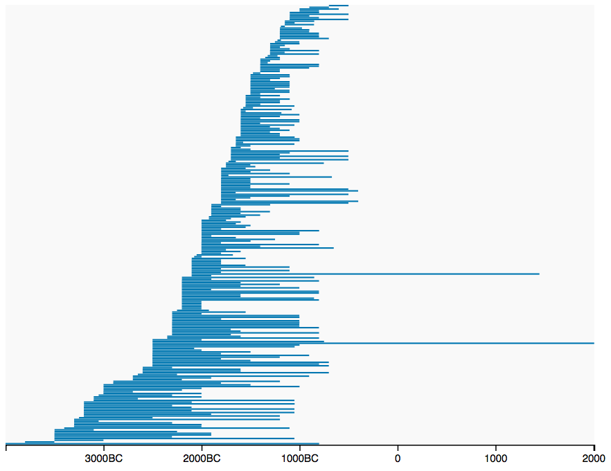

“All of us, even when we think we have noted every tiny detail, resort to set pieces which have already been staged often enough by others.” — W. G. Sebald, Austerlitz
Periods are the set pieces of history, and their staging is a strategy for making change over time meaningful and understandable. Periodization structures not only histories themselves, but also the ways those histories are organized in libraries, the ways teachers of history organize syllabi and textbooks, and the ways historians organize themselves in academic institutions. Like the histories they structure, periodizations are also imposed on the conquered by their conquerors. Periodization itself is a legacy of colonialism, grounded in a linear ontology of time that has forced aside indigenous understandings of temporality. Periodization is also a perennial topic for reflection in the humanities, as scholars cast a critical eye on the categories that organize their work. But like a linear conception of time, periodization is both easily critiqued and difficult to relinquish.
Critique is not the only response to periodization: several scholars have suggested alternative approaches to conceptualizing historical temporality. Wishart (2004: 313), responding to histories of the Plains Indians that “fold their ethnographies into periods that are derived from American, not indigenous, realities,” suggests as alternatives periodizations grounded in economic cycles or patterns of population change. Dimock (2001: 758) proposes abandoning the “decades and centuries” scale of conventional literary periods in favor of a “deep time” of “extended and nonstandardized duration.” Others explicitly consider the role of the digital humanities in realizing alternatives to periodization. Brooks (2012) claims that “the digital world is moving in concert with Indigenous literary traditions” (312) and foresees that, as scholars embrace digital media, “the measuring tape of time will become decreasingly useful and, perhaps, increasingly (self)destructive” (309). Underwood (2013) argues that the penchant for periodization among literary scholars stems not from a desire to neatly sort history into standardized bins, but from a disciplinary identity rooted in theories of discontinuity and rupture. He sees the digital humanities as challenging that identity by providing tools and vocabulary for describing gradual, continuous change.
Besides critique and the imagining of alternatives, a third response to periodization is to document it. This is the motivation behind PeriodO ( http://perio.do), a gazetteer of scholarly definitions of historical periods. Gazetteers are typically directories of place names, but understood broadly, any reference tool documenting named concepts that can be spatiotemporally located is a gazetteer (Shaw, 2016: 58). The PeriodO gazetteer documents specific published assertions about periods, including their names, their extent in space and time, and when, where, and by whom these assertions were made. Unlike gazetteers focused primarily on standardization, PeriodO is a deep gazetteer which attempts to document a range of perspectives taken and judgments made (Shaw, 2016: 58–60). Hence there is not a single “Bronze Age” in PeriodO, but hundreds (Figure 1).
Figure 1. Visualizing the temporal extents of hundreds of different “Bronze Age” concepts
PeriodO is published as “linked data,” providing for the documented concepts stable identifiers in the form of URLs, which can then be resolved into sets of “triples”—subject-predicate-object structures representing assertions about those concepts. As of November 2017, there are over five thousand periods documented in PeriodO, from more than one hundred sources in over twenty languages. For each of these periods, the assertions documented include structured bibliographic data describing the source, temporal extent as delimited by up to four points in time, and spatial coverage via links to places in other linked data gazetteers. PeriodO has been designed to be collaboratively edited by a community of scholars, regardless of whether they have any knowledge of or experience with linked data technologies (Shaw et al., 2015). Anyone with a free ORCID personal identifier (Haak et al., 2005) can immediately submit proposed additions to the gazetteer, without any additional barriers to contribution.
Through its public domain identification and documentation of period concepts, PeriodO provides a means by which curators of periodized data can resolve ambiguous period terms and bridge datasets employing different interpretations of the same period term. This is much like the service provided by the Pleiades gazetteer of ancient places (Elliott and Gillies, 2008). Pleiades uses PeriodO URLs to identify its period concepts, just as PeriodO uses URLs from place gazetteers like Pleiades to identify its place concepts. Pleiades plays an integral role in an increasingly fecund ecology of linked scholarly data projects, many of them incubated by the community-driven Pelagios initiative (Isaksen et al., 2014). The Peripleo spatiotemporal search and visualization tool, built to search over and visualize data produced by the projects participating in this initiative, indexes PeriodO URLs and can use PeriodO data to translate between period terms and spatiotemporal locations (Simon et al. 2016). PeriodO is also used by the ARIADNE archaeological research data infrastructure to document the more than 600 period concepts it employs (Niccolucci and Richards, 2013).
The PeriodO team would like to engage those gathered at the 2018 Digital Humanities conference in Mexico City for several reasons. First, we would like to present the results of four years’ iterative development of the PeriodO dataset and tools, funded by consecutive grants from the National Endowment for the Humanities and Institute of Museum and Library Services. This will include the outcomes of two workshops focused on periodization and spatiotemporal knowledge organization, held in August 2016 and December 2017. We hope that an overview of PeriodO’s design and implementation will be of interest not only to those working with periodized data, but anyone interested in the architecture of scholarly infrastructure.
Second, we hope to inspire others to use the PeriodO data for purposed other than data curation. Visualizations of PeriodO data could be used to help students understand the nature and politics of periodization, or to make arguments about the history of historiography. Advocates of alternatives to periodization may find PeriodO's documentation useful in the spirit of “know your enemy.” A large collection of multilingual descriptions of temporal extent and their corresponding interpretations as numerical ranges may be useful for natural language processing. There are undoubtedly other possibilities, and if the data in its current state is not adequate for exploring them, we’d like to figure out how we can make it so.
Most importantly, we hope to catalyze collaborations with a broader range of scholars interested in documenting periodizations. The majority of period concepts documented in PeriodO originated in archaeology, art history, and the authority files of libraries and museums. We would like to have far more documentation of periodizations from areas such as literary studies, social history, and intellectual history—areas with far less consensus on periodization than archaeology and art history. And while PeriodO documents period concepts associated with places around the world, the majority of its scholarly sources are still American and European—another defect we'd like to correct. A primary goal of PeriodO is to enable contrast of and comparison between different interpretations of the past, and this requires broad collaboration.
As broad as that collaboration may become, PeriodO will always be limited by the framework of linear time that it employs as a means of making temporal extents comparable. Still, there is no reason that PeriodO could not connect with other projects exploring alternative temporalities, in the vein of Drucker’s (2009) experiments with relational temporal modeling, Brooks’ “spiral” time, or even Underwood’s probabilistic, gradient time. Though it may not be possible to directly compare the temporal entities or processes registered by these various alternative conceptualizations, they might still be interlinked and hence more readily brought into dialogue with one another. We hope that our colleagues at DH 2018 will have some ideas about how that could happen, or insights into why it might not.